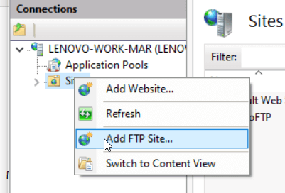
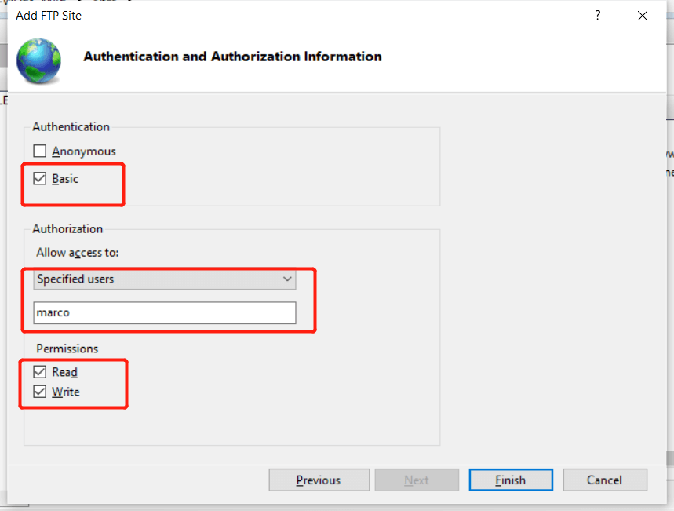

Windows 配置 FTP 服务器
Windows 10 以上系统自带 FTP server，可以简单的搭建一个局域网内应用的 FTP 服务器。下面介绍具体操作流程。
搜索 windows feature 打开功能开关配置界面：
开启如下 ftp 相关选项，确认后等待安装完成：
搜索 Administrative Tools：
双击 Internet Information Services (IIS) Manager:
sites 上右键点击 add ftp site：

设置名称及共享路径：
选择无 ssl：
选择 basic 验证以及指定可登录 FTP 的用户，设置读写权限：

可以单独建立一个用户用来登录 ftp，建立账户可以参考我的教程：https://blog.niekun.net/archives/2103.html#title-4
设置完成后，点击完成即可。
然后配置防火墙例外，搜索 allow an app through windows firewall:
在列表中找到 ftp server 并打勾即可：
以上就完成了 Windows 端 ftp 服务器的搭建，可以使用 ftp 客户端登录此 ftp 服务器了。
参考链接：
How to set up and manage an FTP server on Windows 10
标签：无